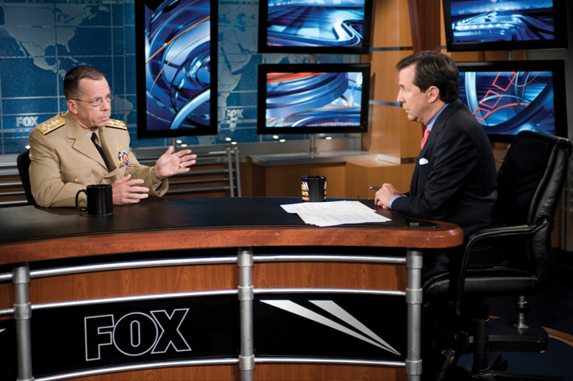
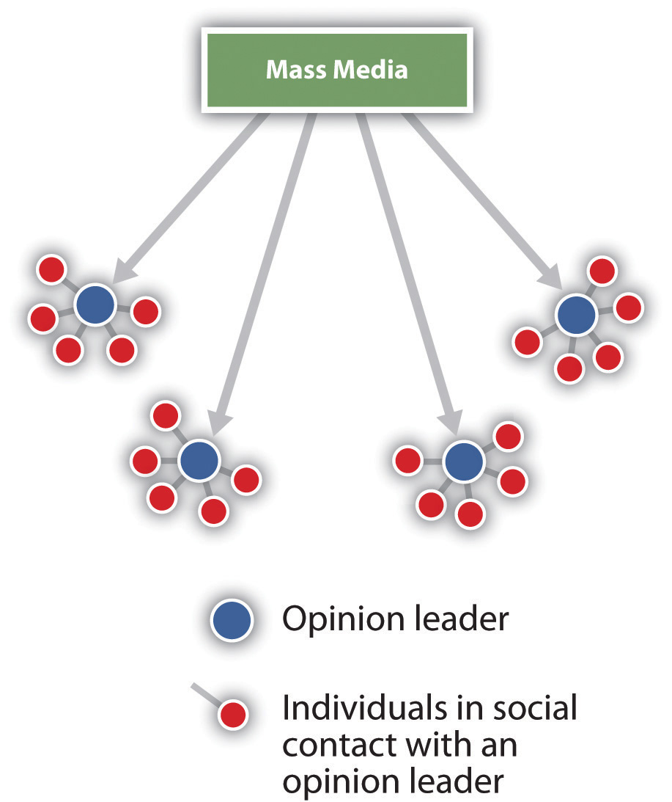

It has become a ritual for Americans to spend the evening of presidential elections gathered in front of their televisions, or more recently, their computer screens, to follow the voting returns as they are announced state by state. Election Night 2000 began like any other since the late 1960s, when the television networks began using exit polls of voters taken as they leave the polling place to predict the winner. Election Night coverage is driven by anchors making projections about which candidate will win each state’s electoral votes. Typically, news organizations have a good sense of who will be the next president of the United States based on exit polls by late afternoon, although they hold off on making a prediction until later in the evening.Robert S. Erikson and Kent L. Tedin, American Public Opinion, 8th ed. (New York: Longman, 2011).
The 2000 presidential election was the closest in many decades. There was much uncertainty about whether Republican George W. Bush or Democrat Al Gore would emerge victorious. As Election Night unfolded, it became clear that the outcome would be decided by Florida’s twenty-five electoral votes.James W. Ceaser and Andrew E. Busch, The Perfect Tie (Lanham, MD: Rowman & Littlefield, 2001).
Network and cable news anchors discussed the closeness of the election and told the public to anticipate a long and interesting evening—a statement that proved prescient. By 8 p.m., exit polls indicated that Al Gore was leading the state of Florida, prompting television news organizations to speculate that Gore would be headed to the White House. CBS News anchor Dan Rather observed on air, “Now, remember, Florida is the state where Jeb Bush, the brother of George Bush, is the governor, and you can bet that Governor Bush will be madder than a rained-on rooster that his brother, the governor, wasn’t able to carry this state for him.”Dan Rather, CBS Evening News, Election Night Coverage, November 7, 2000, 8:15 p.m.
Three hours later, the networks began to rescind the call of Florida for Gore when it became evident that data from exit polls conflicted with actual returns from voting precincts. Network anchors reported that Florida’s electoral votes were still up for grabs until Fox News called Florida for Bush at 2:16 a.m.; ABC, CBS, and NBC quickly followed suit. With the media’s proclamation of Bush as the winner, Gore phoned Bush and conceded the election. Gore then departed from his hotel suite in Nashville to make his concession speech in front of his supporters. While Gore was en route, the press once again changed their position, stating that the election was too close to call. Gore returned to his hotel, as the media’s Election Night prediction of a Bush victory lasted all of ninety minutes.
Television news was not the only media source to prematurely call the election. Print newspapers, including the New York Post, the Miami Herald, and the San Francisco Chronicle, ran headlines declaring Bush the winner. The New York Times released 100,000 newspapers stating that Bush “appears to have won.” For an hour, the New York Times website proclaimed, “Bush Captures the White House.”Diana Owen, “Media Mayhem,” in Overtime!, ed. Larry J. Sabato (New York: Longman, 2002), 123–56.
The 2000 election was not decided on Election Night—November 7. Instead, a recount of the votes in Florida was undertaken in an attempt to determine the winner. The recount was halted by the US Supreme Court on December 12, 2000, and George W. Bush was sworn in as president on January 20, 2001.

Exit polls misguide 2000 Election Night coverage. Misguided by exit poll data, television news organizations prematurely called the 2000 presidential election contest in favor of Al Gore first and then George W. Bush. The election was too close to call on election night and eventually was decided in favor of Bush.
Source: Used with permission from Getty Images.
The Election Night 2000 media debacle illustrates a number of points relevant to this chapter. Polling is an integral element of American politics. Polls shape the way that news organizations frame their stories and convey information to the public. In fact, many news organizations have in-house polling operations or collaborate with polling firms to have public opinion data constantly available. Poll results allow the media to convey information to the public in a concise and authoritative manner. Polls can provide guidance to decision makers about election outcomes and policy debates. However, poll results are not always accurate, as was the case with the exit polls in the 2000 presidential election, and they can misrepresent public sentiment. Therefore, it is important for people to be savvy consumers of opinion polls.
After reading this section, you should be able to answer the following questions:
Public opinion is one of the most frequently evoked terms in American politics. At the most basic level, public opinionPeople’s collective preferences on matters related to government and politics. represents people’s collective preferences on matters related to government and politics. However, public opinion is a complex phenomenon, and scholars have developed a variety of interpretations of what public opinion means. One perspective holds that individual opinions matter; therefore, the opinions of the majority should be weighed more heavily than opinions of the minority when leaders make decisions. A contrasting view maintains that public opinion is controlled by organized groups, government leaders, and media elites. The opinions of those in positions of power or who have access to those in power carry the most weight.
Public opinion is often made concrete through questions asked on polls. Politicians routinely cite public opinion polls to justify their support of or opposition to public policies. Candidates use public opinion strategically to establish themselves as front-runners or underdogs in campaigns. Interest groups and political parties use public opinion polls to promote their causes. The mass media incorporate reports of public opinion into news story about government and politics.
What exactly is public opinion? Scholars do not agree on a single definition of public opinion. The concept means different things depending on how one defines “the public” and assumptions about whose opinion should or does count the most—individuals, groups, or elites.
Most simply, the public can be thought of as people who share something in common, such as a connection to a government and a society that is confronted by particular issues that form the bases of public policies. Not all people have the same connection to issues. Some people are part of the attentive publicPeople who pay close attention to government and politics in general. who pay close attention to government and politics in general. Other individuals are members of issue publicsPeople who focus on particular public policy debates and ignore other issues. who focus on particular public policy debates, such as abortion or defense spending, and ignore others.James A. Stimson, Public Opinion in America, 2nd ed. (Boulder, CO: Westview, 1999). They may focus on a policy that has personal relevance; a health-care activist, for example, may have a close relative or friend who suffers from a prolonged medical problem. Some members of the public have little interest in politics or issues, and their interests may not be represented.
An opinionThe position that a person takes on a particular issue policy, action, or leader. is the position—favorable, unfavorable, neutral, or undecided—people take on a particular issue, policy, action, or leader. Opinions are not facts; they are expressions of people’s feelings about a specific political object. Pollsters seeking people’s opinions often say to respondents as they administer a survey, “there are no right or wrong answers; it’s your thoughts that count.” Opinions are related to but not the same as attitudesPersistent, general orientations toward people, groups, or institutions., or persistent, general orientations toward people, groups, or institutions. Attitudes often shape opinions. For example, people who hold attitudes strongly in favor of racial equality support public policies designed to limit discrimination in housing and employment.
Public opinion can be defined most generically as the sum of many individual opinions. More specific notions of public opinion place greater weight on individual, majority, group, or elite opinion when considering policy decisions.
Public opinion can be viewed as the collection of individual opinions, where all opinions deserve equal treatment regardless of whether the individuals expressing them are knowledgeable about an issue or not. Thus, public opinion is the aggregation of preferences of people from all segments of society. The use of public opinion polls to gauge what people are thinking underlies this view.Carroll J. Glynn, Susan Herbst, Garrett J. O’Keefe, and Robert Y. Shapiro, Public Opinion (Boulder, CO: Westview, 1999). By asking questions of a sample of people who are representative of the US population, pollsters contend they can assess the American public’s mood.Susan Herbst, Numbered Voices (Chicago: University of Chicago Press, 1993). People who favor this perspective on public opinion believe that government officials should take into account both majority and minority views when making policy.
Another perspective maintains that public opinion is the opinion held by the most people on an issue. In a democracy, the opinions of the majority are the ones that should count the most and should guide government leaders’ decision making. The opinions of the minority are less important than those of the majority. This view of public opinion is consistent with the idea of popular election in that every citizen is entitled to an opinion—in essence a vote—on a particular issue, policy, or leader. In the end, the position that is taken by the most people—in other words, the position that receives the most votes—is the one that should be adopted by policymakers.
Rarely, if ever, does the public hold a single unified opinion. There is often significant disagreement in the public’s preferences, and clear majority opinions do not emerge. This situation poses a challenge for leaders looking to translate these preferences into policies. In 2005, Congress was wrestling with the issue of providing funding for stem cell research to seek new medical cures. Opinion polls indicated that a majority of the public (56 percent) favored stem cell research. However, views differed markedly among particular groups who formed important political constituencies for members. White evangelical Protestants opposed stem cell research (58 percent), arguing the need to protect human embryos, while mainline Protestants (69 percent) and Catholics supported research (63 percent).Pew Research Center for the People & the Press, “More See Benefits of Stem Cell Research” (Washington, DC: Pew Research Center, May 23, 2005).
Some scholars contend that public opinion emerges from public debate among groups rather than from individual opinions.Carroll J. Glynn, Susan Herbst, Garrett J. O’Keefe, and Robert Y. Shapiro, Public Opinion (Boulder, CO: Westview, 1999). Political parties, interest groups, trade associations, nonprofit organizations, trade unions, and corporations will articulate positions and front public discussion of issues in which they have a stake. Groups representing opposing viewpoints often find themselves in a position to define social problems. While individuals often find it difficult to make their views known and have them taken seriously, organized groups have the resources, such as lobbyists and funding to administer polls and pay for advertising, as well as the ability to attract the attention of policymakers and the mass media. Social media have made it easier for groups without significant resources to publicize their opinions by using Facebook groups and other platforms.
Groups work hard to frame issue debates to their advantage. They often will gauge public preferences and use this information when devising media tactics to gain support for their positions.Ken Kollman, Outside Lobbying (Princeton, NJ: Princeton University Press, 1999). Opposing groups will present competing public opinion poll data in an effort to influence decision makers and the press. In 1997, the United States’ participation in a summit in Kyoto, Japan, where nations signed a climate-control treaty, sparked a barrage of media stories on the issue of global warming and the potential for deadly gasses to induce climate change. Most Americans believed then that global warming existed and that steps should be taken to combat the problem.Jon A. Krosnick, Penny S. Visser, and Allyson L. Holbrook, “American Opinion on Global Warming,” Resources no. 133 (Fall 1998): 5–9. Groups such as the Environmental Defense Fund, Greenpeace, and the Sierra Club who favor government-imposed regulations on fossil-fuel companies and automobile manufacturers to curb pollution cited opinion poll data showing that over 70 percent of the public agreed with these actions. Organizations representing industry interests, such as the now-defunct Global Climate Coalition, used opinion polls indicating that the public was reluctant to sacrifice jobs or curb their personal energy use to stop global warming.Glynn R. Wilson, “Global Warming: Competing Ideas and Interest Groups,” Public Opinion Project, May 2, 1998, accessed June 19, 2005, http://www.southerner.net/fast/pocompet.html. The debate in the media among competing groups influenced public opinion over the following decade. There was a massive shift in opinion, as only 52 percent believed that global warming was a problem in 2010.Christopher R. Borick, Erick Lachapelle, and Barry G. Rabe, “Climate Compared: Public Opinion on Climate Change in the United States and Canada,” Issues in Governance Studies, no. 39, April 2011, accessed April 11, 2011, http://www.brookings.edu/~/media/Files/rc/papers/2011/04_climate_change_opinion/04_climate_change_opinion.pdf.
Figure 7.1 Group Opinions on Social Media

Social media facilitate people’s ability to express their opinions through groups, such as those related to environmental activism.
Politicians, pollsters, policy specialists, activists, and journalists have assumed the position of opinion leaders who shape, create, and interpret public opinion. These political elites are devoted to following public affairs—it’s their job.John Zaller, The Nature and Origins of Mass Opinion (New York: Cambridge, 1992). Noted journalist and social commentator Walter Lippmann observed that average people have neither the time nor the inclination to handle the impossible task of keeping up with the myriad issues that confront the nation. They do not have the opportunity to directly experience most political events and must rely on second-hand accounts conveyed by elites primarily through mass media. In Lippmann’s view, public opinion is best managed by specialists who have the knowledge and capabilities to promote policies. Thus, elite opinion, and not the views of average citizens, should count the most.
The mass media rely heavily on the opinions of government elites, especially when covering foreign policy and domestic issues, such as the economy and employment. The breadth of news coverage about foreign affairs is constrained to reflect the range of viewpoints expressed by officials such as members of Congress who are debating the issues. The voices of average Americans are much less prominent in news coverage.W. Lance Bennett, Regina C. Lawrence, and Steven Livingston, When the Press Fails (Chicago, IL: University of Chicago Press, 2007). As political scientist V. O. Key stated, “The voice of the people is but an echo.”V. O. Key Jr., Public Opinion and American Democracy (New York: Alfred A. Knopf, 1961).
Figure 7.2 Pundits Offer Opinions
“Talking heads,” who provide elite opinions about issues, events, and leaders, populate cable news.
Elite opinion is increasingly articulated by punditsPeople who offer their opinion or commentary on political issues through the media. who offer their opinion or commentary on political issues. College professors, business and labor leaders, lobbyists, public relations representatives, and pollsters are typical pundits who provide expert opinion. Some pundits represent distinctly partisan or ideological viewpoints and use public opinion data selectively to support these positions. Pundits can establish their credentials as experts on governmental affairs and politics through their frequent media appearances as “talking heads” on cable television programs such as CNN, MSNBC, and Fox News.
Public opinion can be defined broadly as the collective views of people in a society. It is a complicated concept that takes into account the opinions of individual citizens, groups, and elites. Public opinion is publicized through the media, often by pundits who promulgate elite views.
After reading this section, you should be able to answer the following questions:
Political scientist Harold Lasswell once noted, “The open interplay of opinion and policy is the distinguishing mark of popular rule.”Harold D. Lasswell, Democracy through Public Opinion (Menasha, WI: George Banta Publishing Company, 1941), 15. Public opinion plays a number of important roles in a representative democracy. Leaders can take public opinion into account when making laws and formulating policy. Public opinion can act as a check on leadership, as the members of the public can express their dissatisfaction with politicians who refuse to take their opinions into account and vote them out of office.
One purpose of public opinion in a democracy is to inform public policymaking. Opinion polls provide a mechanism for succinctly presenting the views of the mass public to government leaders who are making decisions that will affect society. Leaders often monitor the public pulse when making policy decisions, especially when they face an election campaign.
Perspectives about the relationship of public opinion to policymaking differ vastly. On the one hand, scholars and political practitioners believe that public policy should be guided by public opinion so that the will of the people is respected. Public opinion polls are essential to ensuring democratic governance. Political scientist Sidney Verba supports this view: “Surveys produce just what democracy is supposed to produce—equal representation of all citizens. The sample survey is rigorously egalitarian; it is designed so that each citizen has an equal chance to participate and an equal voice when participating.”As cited in Scott Keeter, “Public Opinion Polling and Its Problems,” in Political Polling in the Digital Age, ed. Kirby Goidel (Baton Rouge: Louisiana State University Press, 2011), 28. From this perspective, members of Congress, state legislators, and local officials should pay close attention to the public’s views when making laws.
Others disagree with the notion that leaders should pay close attention to public opinion when making decisions. They point out that many members of the public are uniformed about issues, and the opinions they record on polls are not carefully reasoned. Journalist and scholar Walter Lippmann noted that governing by popularity is not always best. Instead, public policy should be grounded in sound principles supported by experts; decision making should not simply be the result of popular will. This view is consistent with the belief that the country is being run by pollsters and their followers and not by leaders with integrity and principle. As an editorial in the Wall Street Journal lamented, “Spend too much time following polls and you simply forget how to lead, especially when it matters.”Kenneth F. Warren, In Defense of Public Opinion Polling (Boulder, CO: Westview Press, 2004), 6.
Some scholars take issue with Verba’s assessment of the egalitarian nature of polls in democracy and argue that minority opinion is not given sufficient weight. Certain people, such as individuals with few economic resources, have a difficult time getting their views recognized. Pollsters may not reach these people because they do not have regular telephone or Internet service, or they do not have the time or inclination to answer questionnaires.
Public opinion, especially as measured by polls, is a quick take on the public pulse. It often does not require that members of the public have much knowledge about politicians, government, or policies; they merely must be willing to state whatever views pop into their heads. Public opinion polls often deal with issues and abstract ideas that people have not thought much about.
Public judgmentA type of public opinion where people carefully consider the range of viewpoints and policy consequences of issues., in contrast, is a special type of public opinion where people carefully consider the important issues of the day, contemplate the range of viewpoints, and weigh the consequences of policy prescriptions. Rather than stating positions off the top of their heads, public judgment requires people to be knowledgeable about an issue and debate the merits of policies before arriving at an informed opinion. For example, public opinion polls conducted by the Pew Research Center in 2011 indicate that the public favors tougher immigration laws and better enforcement of border security. However, when people exercise public judgment and consider the consequences of immigration policy, such as the moral issues related to the welfare of children of illegal immigrants, they support more generous policies.Daniel Yankelovich, Coming to Public Judgment (Syracuse, NY: Syracuse University Press, 1991). Public judgment is not easily achieved, but it offers an important counterbalance to the domination of elite opinion in the policy sphere.
Deliberative pollingA technique that brings people together to discuss issues with experts and other citizens in order to arrive at more informed opinions. is a technique that provides members of the public with the opportunity to think carefully about issues and their relationship to public policy. It attempts to deal with the fact that many people know little about issues because they lack the time to acquire information. Deliberative polling was pioneered in 1988 and has been used around the world to gauge opinion. The Center for Deliberative Democracy at Stanford University applies and studies the use of deliberative polling.
Figure 7.3 Deliberative Polling

Deliberative polling brings people together to discuss issues in detail with policy experts so that they can develop informed choices.
Source: Photo courtesy of Bernard Pollack, http://www.flickr.com/photos/labor2008/2587616688/.
A random, representative sample of people is first polled about their positions on targeted issues. They are then brought together for a few days to discuss a particular issue in detail. The participants are provided with briefing materials, engage in a dialogue with experts on specific topics, and discuss their views in small groups led by trained moderators. The deliberations are shared with the general public through television broadcasts. The participants are polled again after they have deliberated to determine if their opinions have changed. Scholars believe that deliberative polls represent the opinions the public would hold on issues if they had the opportunity to exercise public judgment and carefully consider their options. After deliberating on an issue, members of the public frequently shift positions.James S. Fishkin, When the People Speak (New York: Oxford University Press, 2009). For example, people participating in a deliberative polling experiment in Texas shifted their views on the use of wind power from 54 percent to 84 percent in favor. As a result, political leaders heeded the views of Texas’s population, and the state went from last to first in the use of wind power.Joe Klein, “How Can a Democracy Solve Tough Problems?,” Time, September 2, 2010, accessed June 6, 2011, http://www.time.com/time/politics/article/0,8599,2015481,00.html.
Political scientist James Fishkin, who pioneered deliberative polling, observes, “The Public is very smart if you give it a chance. If people think their voice actually matters, they’ll do the hard work, really study their briefing books, ask the experts smart questions and then make tough decisions.”
Public opinion is important in a democracy, as it can guide policy decisions. There is disagreement about the extent to which political leaders should take the public’s views into account compared with the advice of experts. Many people do not have a good understanding about issues and related policies. Deliberative polling is an attempt to give people the opportunity to become more informed about issues and to contemplate policy options.
After reading this section, you should be able to answer the following questions:
Public opinion polling has a long history in the United States. Polls are ubiquitous in American political life. In 2007, there were nearly 5,500 polling organizations in the United States, an increase of over 1,500 organizations in ten years.Kirby Goidel, “Public Opinion Polling in a Digital Age: Meaning and Measurement,” in Political Polling in the Digital Age, ed. Kirby Goidel (Baton Rouge: Louisiana State University, 2011), 11–27. Every day the public is polled about topics ranging from their views about taxes and the federal budget, their opinions about the environment and global warming, and whether or not a principal has the right to prevent students from bringing their lunches to school.
Polls vary greatly in terms of their quality, content, and purpose. Reliable public opinion data are gathered by reputable commercial polling organizations, nonpartisan think tanks, academic institutions, government agencies, and news organizations. Misleading information about public opinion can result from quick polls that do not employ appropriate data-gathering techniques.
Public opinion polls date back to the early days of the American republic. From the outset, polls were linked closely with newspapers. The Harrisburg Pennsylvanian conducted the first informal “straw pollAn informal poll, often used to gauge opinions about candidates, that is administered haphazardly and without attention to proper sampling methods.” in 1824 that incorrectly predicted Andrew Jackson as the winner over John Quincy Adams in the presidential election.Robert S. Erikson and Kent L. Tedin, American Public Opinion, 8th ed. (New York: Longman, 2011). Early straw polls were administered haphazardly and without concern for drawing a proper sample, often right after people had cast their ballots in elections or even when they were checking into a hotel. They were notoriously inaccurate, yet they became a popular feature of newspapers and magazines, which treated poll data as a source of news much like today.
Straw polls were sponsored by publishers as a gimmick to attract readers who would fill out mail-in ballots that included subscription offers. Over eighty straw polls were conducted during the 1924 presidential election, six of which were national polls. Newspapers also conducted polls on pressing issues of the day, such as whether or not people favored Prohibition, the constitutional ban on alcohol. Coverage of these polls in print publications generated thousands of column inches.Robert S. Erikson and Ken L. Tedin, American Public Opinion, 8th ed. (New York: Longman, 2011).
By the 1920s, market researchers had begun to use scientific polls that employed samples representative of the population to ascertain consumer product preferences. They used polls to discover everything from what kinds of magazine stories readers enjoyed most to what automobiles people preferred.Kathleen Morgan Drowne, The 1920s (Westport, CT: Greenwood Press, 2004). Commercial pollsters applied market research techniques to determine what candidates voters favored, how satisfied the public was with the way the president was doing his job, and how people felt about the pressing issues of the day.
Despite these advances, magazines and newspapers continued to use unscientific straw polls, which were less expensive to administer and contributed to the profitability of the publication. The problems associated with straw polls came to a head in the 1936 presidential election when the Literary Digest, a popular magazine with a large circulation, incorrectly predicted the presidential election outcome, prompting the public to lose faith in polls. For a time after the Literary Digest debacle, newspapers shied away from highlighting polls in their coverage.
The Literary Digest Poll
In polling, more subjects does not necessarily yield better results. This lesson was learned all too well by the Literary Digest in 1936. Founded in 1890, the Literary Digest was a venerable general interest magazine that catered to an educated, well-off clientele. In 1916, the magazine initiated a presidential election poll that became a popular feature. Subscribers mailed in sample ballots indicating their preference in the election. The poll correctly predicted that Woodrow Wilson would be the winner, and the magazine’s poll went on to successfully call the next four elections. Newspapers gave substantial coverage to the poll, which drove up the magazine’s readership. In 1932, James A. Farley, chairman of the Democratic National Committee, was widely quoted as saying, “Any sane person cannot escape the implication of such a gigantic sampling of popular opinion as is embraced in the Literary Digest straw vote.… It is a Poll fairly and correctly conducted.”
The magazine set out to launch its most ambitious poll ever in 1936. Over 10 million postcards were mailed to Literary Digest subscribers, people on automobile registration lists, and names in telephone directories, of which 2.4 million were returned. The Literary Digest issued its predictions in an article boasting that the figures represented the opinions of “more than one in every five voters polled in our country” scattered throughout the forty-eight states. The results indicated that Republican candidate Alfred Landon would defeat Franklin Roosevelt, receive 57 percent of the popular vote, and carry thirty-two states in the Electoral College. Roosevelt won by a landslide, commanding 61 percent of the popular vote and winning in all but two states.
While the magazine made no claims of infallibility, its methodology was heavily flawed. The sample was biased toward Republican-leaning voters who could afford telephone service, cars, and magazine subscriptions. The volunteers who tabulated the results were not carefully trained, which introduced additional error into the calculations. The backlash from the errant results was monumental. The Literary Digest went bankrupt, and the public’s faith in polls was shattered.

Literary Digest 1936 election issue. The 1936 Literary Digest straw poll that incorrectly predicted that Alf Landon would defeat Franklin Roosevelt by almost 20 percentage points in the presidential election marked the end of the era of straw polls and the beginning of the use of scientific polls in reporting.
Commercial pollsters using scientific techniques correctly predicted that Roosevelt would defeat Landon in the 1936 election. These pollsters conduct polls for clients for a profit. The Gallup Poll administered personal interviews with a quota sampleA method of selecting survey participants that involves choosing subjects on the basis of their fitting into particular demographic categories, such as sex and age groups. of people who fit into particular demographic categories, such as sex and age groups. Gallup correctly predicted the winners of the 1940 and 1944 presidential contests. However, during the 1948 election, three major pollsters—Gallup, Roper, and Crossley all incorrectly predicted that Republican presidential candidate Thomas Dewey would defeat Democratic candidate Harry Truman. The quota sampling method used by these pollsters was problematic and was replaced by probability samplingA method of selecting survey participants at random., in which subjects are randomly selected to take part in a poll.Barbara A. Bardes and Robert W. Oldendick, Public Opinion: Measuring the American Mind (Belmont, CA: Wadsworth/Thompson Learning, 2006).
Dewey Defeats Truman
The 1948 presidential election did not start off well for Democratic candidate Harry S. Truman. As vice president, Truman was sworn in as president when Franklin Roosevelt died less than three months into his fourth term. Truman was forced to deal with a variety of controversial issues, including the decision to drop atomic bombs on Hiroshima and Nagasaki, which he believed would end World War II in the Pacific. Newspapers labeled Truman a “little man,” a tag that resonated with the public who contrasted him unfavorably to the larger-than-life Roosevelt.
The Democrats were highly factionalized when they met in Philadelphia for their national nominating convention. They attempted unsuccessfully to recruit popular war hero Dwight D. Eisenhower to be their candidate. When the convention adopted a strong civil rights platform, Southern delegations bolted and nominated their own candidate, Strom Thurmond of South Carolina. Liberals who disapproved of Truman’s policies formed the Progressive Party and nominated Henry Wallace of Iowa as their candidate. In the end, Truman became the nominee with Senator Alben Barkeley of Kentucky as his running mate. The pair was faced with an unenthusiastic constituency.
In contrast, the Republican Party united behind Thomas E. Dewey, the popular governor of New York. Dewey had been the Republicans’ candidate in the 1944 presidential campaign, and had come close to Roosevelt in the popular vote. California Governor Earl Warren, future chief justice of the Supreme Court, was the vice presidential candidate.
Pollsters and the press anticipated that Dewey would win by a landslide. On September 9, 1948, nearly two months prior to the election, noted pollster Elmo Roper declared that there would be no more Roper Polls predicting the outcome: “My whole inclination is to predict the election of Thomas E. Dewey by a heavy margin and devote my time and efforts to other things.”Elmo Roper as quoted in David McCullough, Truman (New York: Simon & Schuster, 1992), 657.
Normally, incumbents such as President Truman run low-key campaigns, and challengers such as Governor Dewey work hard to win. Dewey campaigned like a front-runner, remaining aloof and dignified while avoiding discussions of controversial issues. Roles were reversed in the 1948 presidential campaign. Truman, realizing he had nothing to lose, launched an aggressive “Whistle Stop” campaign. Traveling in a special Pullman railroad car nicknamed the Ferdinand Magellan, after the explorer who circumnavigated the world, Truman covered 32,000 miles and gave 355 rousing speeches. At each stop, Truman would introduce his family to the crowd, answer questions, and shake hands. As he fought his way through the campaign, he acquired the slogan “Give ‘em hell, Harry!”
Even as Truman’s campaign picked up steam and polls showed the gap between the candidates was closing, the press refused to concede that he could win. Newsweek polled fifty political journalists a month before the campaign, and all of them stated that Dewey would win. Truman had the support of only 15 percent of the nation’s newspapers.American Treasures of the Library of Congress, “Dewey Defeats Truman” (Washington, DC: Library of Congress, American Memory Collection, 2003). By Election Day, polls indicated that Truman might pull an upset, but journalists stuck to their story that Dewey would win by a landslide. Reports filtered in throughout Election Night that Truman was leading in the popular vote, but the press continued to report that he could not emerge victorious. The Chicago Tribune was so certain that Truman would lose, the headline of the early edition proclaimed “DEWEY DEFEATS TRUMAN.” The paper had already been delivered, and the Tribune dispatched employees to retrieve the papers from newsstands and homes, but many remained in the hands of readers. Traveling by train from his home state of Missouri to Washington, DC, Truman made a brief stop in St. Louis, where he was presented with one of the papers bearing the infamous headline. Truman held up the paper and quipped, “This is for the books.”David McCullough, Truman (New York: Simon & Schuster, 1992).

“DEWEY DEFEATS TRUMAN.” Truman’s victory, as immortalized in this enduring image, is one of the biggest comebacks in American elections.
Source: Photo courtesy of Dave Winer, http://www.flickr.com/photos/scriptingnews/2544447858/.
Survey research organizations associated with academic institutions emerged in the 1940s with the establishment of the National Opinion Research Center (NORC) at the University of Chicago and the Survey Research Center (SRC) at the University of Michigan. These organizations and others like them, such as the Roper Center at the University of Connecticut, field and archive detailed surveys that provide researchers with a wealth of data to use in studies to gain a deeper understanding of the public’s political attitudes and behavior. Nonpartisan survey research organizations, such as the Pew Research Center and the Field Poll in California, provide data to news organizations and academics. Commercial pollsters, including Gallup and IBOPE Zogby International, provide polling services to clients and also share their data with the press, scholars, and the public through their websites.
The amount of polling data available today from commercial polling firms, academic survey research organizations, campaign organizations, trade associations, interest groups, media outlets, and online sources is almost overwhelming. There are great variations in the type and quality of polling data. A public opinion survey fielded by a reputable organization using proper social scientific techniques differs greatly from a quick pollAn online poll, usually consisting of one or two questions, that is asked of a nonrepresentative, self-selected sample of respondents. consisting of one or two questions administered online to whoever is willing to take it.
Questionnaires used to measure public opinion include a variety of question types. Closed-ended questionsItems on a questionnaire that provide respondents with a fixed number of options about a topic from which they can choose the one that best fits their position. provide respondents with a fixed number of options about a topic from which they can choose the one that best fits their position. A closed-ended question frequently asked to gauge people’s feelings about the direction in which the country is headed is “Generally speaking, would you say things in this country are heading in the right direction, or are they off on the wrong track?” Respondents must select one of the options: the right direction or the wrong track. Closed-ended questions are easier and less time-consuming to analyze, although they limit the respondent’s ability to express their opinions to the choices offered by the researcher. Open-ended questionsItems on a questionnaire that allow respondents to reply to a question in their own words. do not provide fixed options but instead allow respondents to reply to a question in their own words. This type of question elicits more information from respondents and can be useful in gaining insight into sensitive topics. The drawbacks of open-ended questions are that people may not want to take the time to answer them and they are more time-consuming for pollsters to analyze. An open-ended question about the direction in which the country is headed would ask people to express their own views in response to the question “How do you think things are going in this country?”
Most polls provide snapshots of people’s opinions at a particular point in time. Other polls track opinions over time in order to determine if people’s views remain stable or change. In rare cases, studies have tracked the opinions of the same groups of people over years, even decades. The views of the women who attended Bennington College in the 1930s were tracked through the 1980s. The study revealed that the college experience changed some of the women’s attitudes and that the views acquired in college remained stable over time.Duane F. Alwin, Ronald L. Cohen, and Theodore M. Newcomb, Political Attitudes over the Life Span: The Bennington Women after Fifty Years (Madison: University of Wisconsin Press, 1991).
The terms “poll” and “survey” often are used interchangeably, yet there are distinctions between them. A public opinion pollA short questionnaire administered to a sample of people to ascertain the views of a larger population usually conducted by a commercial organization. is typically conducted by a commercial organization working for a profit. A poll generally consists of a short questionnaire administered over a brief period of time to a sample of between six hundred and fifteen hundred people. A surveyA questionnaire typically administered by academic or government researchers to a representative sample people drawn from a larger population. most often is conducted by academic or government researchers. Surveys consist of longer questionnaires designed to examine the foundations and consequences of opinions in some detail. Researchers may administer the survey to thousands of subjects interviewed over an extended period of time.Michael W. Traugott and Paul J. Lavrakas, The Voter’s Guide to Election Polls, 2nd ed. (New York: Chatham House, 2000).
Scientific polls and surveys are considered to be the gold standard for measuring public opinion. They adhere to established procedures that help ensure the accuracy of their results, which includes using proper techniques for drawing a sample and designing questions. Scientific polls and surveys are administered to a sample of people who are representative of a larger population. The sample is drawn using probability sampling, meaning that each person in the population has a chance of being included in the sample. It is possible to get an accurate accounting of public opinion with a relatively small sample. A representative sample of twelve hundred people can accurately reflect the public opinion of the entire population of the United States. On the other hand, large samples that are not representative may not reflect public opinion accurately at all. Question wording is another important consideration when measuring public opinion. Questions need to be clearly stated, and they should not lead the respondent to choose one answer over another. A poorly worded question can be misunderstood by the respondent and ultimately can misrepresent the public’s viewpoints. Answer options that do not provide the public with clear alternatives also are problematic.
A Fox News poll taken after the 2011 State of the Union Address does not provide clear options for respondents.“Fox News Poll: Give Obama a Grade on the State of the Union,” Fox News, January 26, 2011, accessed April 5, 2011, http://foxnewsinsider.com/2011/01/26/poll-give-obama-a-grade-on-the-state-of-the-union. The answers are double-barreled because people can agree with one part of the answer but not the other. For option A, you may believe that President Obama gave a wonderful speech but not reconsider at least one item on his agenda. Similarly, for option B, you may agree that President Obama gave a good speech, but you may have changed your mind about his agenda.
Survey Question Wording
Source: Adapted from http://foxnewsinsider.com/2011/01/26/poll-give-obama-a-grade-on-the-state-of-the-union/.
There are many ways in which polls and surveys can be administered, including through face-to-face interviews, telephone interviews, mail questionnaires, and online questionnaires. Each of these methods has pros and cons. Face-to-face interviews are advantageous for administering long, complicated surveys, yet they are costly and subjects may be reluctant to talk to a stranger about their opinions. Telephone interviews are relatively easy to administer, but getting a representative sample has become more difficult as many polling organizations rely on landline telephone directories to recruit respondents, and people increasingly are relying on cell phones. Young people are not well represented in landline polls.Scott Keeter, “Public Opinion Polling and Its Problems,” in Political Polling in the Digital Age, ed. Kirby Goidel (Baton Rouge: Louisiana State University Press, 2011), 28–53. Mail questionnaires are a low-cost method that allows subjects privacy when answering questions, which can yield more accurate results. However, mail surveys often suffer from low response rate, as people simply opt out because the questionnaire is self-administered.Michael W. Traugott and Paul J. Lavrakas, The Voter’s Guide to Election Polls, 2nd ed. (New York: Chatham House, 2000).
Online polls have become a more popular option in recent years as the majority of the public has access to the Internet. According to the Pew Internet and American Life Project, 79 percent of American adults were online in May 2010. Studies indicate that online polls are no less reliable than other forms of polling. They have the advantage of being cost-effective, and allowing respondents privacy when answering questions. Online polls also provide opportunities for innovation, such as getting reactions to video clips of campaign ads. The limitation of online polls is that it is more difficult to get a representative sample using the Internet than with some traditional methods, because not all of the public is online. Also, online surveys are self-administered, and people can drop out before they are completed, especially if the questionnaire is lengthy.Scott Keeter, “Public Opinion Polling and Its Problems,” in Political Polling in the Digital Age, ed. Kirby Goidel (Baton Rouge: Louisiana State University Press, 2011), 28–53.
Exit pollsFace-to-face interviews with voters taken as they leave the voting booth to determine their candidate preference in the election and their positions on issues. are face-to-face interviews with voters taken as they leave the voting booth to determine their candidate preference in the election and their positions on issues. They are fielded in a small number of voting precincts with states with the goal of acquiring representative data. They are used to predict the outcomes of elections and to determine the characteristics of voters who supported particular candidates. Exit poll data can reveal, for example, who female, Latino, Republican voters favored in an election campaign.
Exit polls are a major component of the media’s Election Night coverage. Until 1992, each news network had its own in-house exit polling operation. To cut costs, an exit poll consortium, Voter News Service (VNS), was formed to provide data to all the major networks. VNS released the exit poll data that prompted the networks to prematurely declare the results of the 2000 presidential election, and the organization subsequently was disbanded. Exit poll data in the 2008 presidential election and 2010 midterm elections were provided to major television news organizations and the Associated Press by the National Election Exit Polls conducted by Edison Research.
Exit Polling
Read more about exit polling at http://www.edisonresearch.com/us_exit_polling.php.
News organizations use exit polls to declare a winner, sometimes when few of the actual returns from the voting precincts have been recorded. This practice has raised concerns, especially since the major television networks all rely on exit poll data from the same source—the National Election Exit Poll. While exit polls are often accurate, if the sample of voters is unrepresentative of the population, the survey questions are poorly written, or interviewers are not trained to properly administer the poll, the results can be wrong, as was the case in the 2000 presidential election.
Some scholars allege that media reports of exit polls can depress election turnout. When the media declare the winner in a presidential election on the basis of exit polls before the voting booths have closed across the country, people who have not yet voted may decide not turn out. Network television newscasts declared Ronald Reagan the winner of the 1980 presidential election on the basis of exit polls hours before the voting booths had closed on the West Coast. A controversy ensued around the allegation that West Coast voters were discouraged from casting a ballot because they felt their vote was irrelevant. The networks agreed voluntarily to refrain from declaring a winner in elections until after all the polls have closed nationwide—an agreement that has not always been followed.
A quick poll usually consists of one or two questions that are posted to a website, blog, discussion board, social media platform, or podcast. Quick polls have become standard features of websites of news organizations, political leaders, issue advocacy groups, political parties, candidates, bloggers, and even average citizens. They can be distributed through website sidebars, e-mail links, Facebook postings, and Twitter feeds. There are many platforms available that make it easy for just about anyone to field a quick poll. Quick polls also can be administered through robo-pollingAdministering automated polls by phone using a recorded voice to ask the question and requiring respondents to answer by pressing the touch pad on their telephone.—administering automated polls by phone using a recorded voice to ask the question and requiring respondents to answer by pressing the touch pad on their telephone.Mark Blumenthal, “The Case for Robo-Pollsters,” National Journal, September 14, 2009, accessed April 10, 2011, http://www.nationaljournal.com/njonline/the-case-for-robo-pollsters-20090914.
Quick polls do not conform to the established protocols for conducting scientific polls, and they generally are not reliable indicators of public opinion. They often use an unscientific convenience sampleRespondents to unscientific polls who are self-selected. of people who may see the poll posted online or have the link sent to them through e-mail. Most respondents to quick polls are self-selected, and they may have a strong interest in the topic. Often it is possible for people to register their views more than once, which can bias the outcome of the poll. Quick polls may generate many responses, but the results can be wildly inaccurate. In addition, quick poll questions can be designed in a way that elicits a particular response that is then used to promote a particular position. For example, a quick poll might seek to find support for bike lanes in cities by stating, “Seven out of ten Americans favor designating bike lanes in major cities. Do you favor or oppose designating bike lanes in your city?”
Quick polls can be a fun way to generate interest in political affairs. People can express their views easily, and they often get immediate feedback about where they stand compared to others. The results of quick polls often are revealed in visually appealing graphics. Reporters and bloggers use the results of quick polls to generate story lines and supplement the text of their pieces. However, quick polls can be misused when the results are interpreted as if they truly reflect public opinion rather than the views of the people who chose to take them.
Figure 7.4 Quick Polls

Quick polls provide snapshots of political opinion that are used by the media, interest groups, parties, and candidates.
Source: Photo courtesy of Leader Nancy Pelosi, http://www.flickr.com/photos/speakerpelosi/4012966154/.
A push pollNot a legitimate poll but a marketing technique disguised as a poll that is designed to influence respondents’ opinions about candidates and issues through leading questions. is a marketing technique used by political campaigns and issue advocacy groups to influence the opinions of respondents. Despite their name, push polls are not legitimate public opinion polls. They are a form of advertising masquerading in the form of an opinion survey. No one collects or analyzes data from a push poll. However, push polls can influence vote choice in campaigns by incorporating negative attacks on a candidate into the questions asked or associating a candidate with a particular issue position which may or may not be accurate.
Push polls were used against Republican candidate John McCain during the 2000 presidential primary. Voters in South Carolina were asked questions like “Would you be more or less likely to vote for John McCain for president if you knew he had fathered an illegitimate black child?” Push polls were used to target Democratic candidate Barack Obama in the 2008 presidential campaign. Voters in Ohio received phone calls from Opinion Access Corporation asking if they would be more or less likely to vote for Barack Obama if they knew that he had voted to let convicted child sex offenders out early.Sam Stein, “Nasty Anti-Obama Push Poll Launched in Ohio,” Huffington Post, September 11, 2008, accessed June 6, 2011, http://www.huffingtonpost.com/2008/09/11/nasty-anti-obama-push-pol_n_125607.html. While these allegations were untrue or taken out of context, the information was spread to voters. Push polls have been outlawed in certain states and they have been condemned by the American Association of Public Opinion Researchers (AAPOR), the organization that upholds standards for polling and survey research.
There are a variety of ways of measuring public opinion aside from polls. The different sides of an argument expressed in public debates or at a community meeting reflect public opinion. The positions taken in letters to the editor, blog and social media posts, and the comments in response to news stories and editorials are all indicators of public sentiment. The commentary that people post in response to news stories can provide a rich source of information about public opinion, especially when people take the issue seriously and are respectful when expressing their views. This commentary also can be careless and vitriolic, as people resort to personal attacks or post quick reactions to complex issues.
Focus groupsFacilitators convene a small group of subjects to engage in a structured discussion about a topic. have been used for over eighty years to ascertain people’s attitudes, beliefs, and opinions about politics within a group setting. A facilitator asks questions of a group of between eight and twelve people who can engage in a conversation about the topic. Focus groups not only are useful for gaining in-depth insights into what individuals think but also aid in understanding the group dynamics behind public opinion. Focus groups can reveal when people feel comfortable expressing their beliefs, when they will confront others about their views, when they will withdraw from a discussion, and when they are influenced by the opinions of others.David W. Stewart, Prem N. Shamdasani, and Dennis W. Rook, Focus Groups: Theory and Practice, 2nd ed. (Thousand Oaks, CA: Sage Publications, 2007). Focus groups have been used to allow college students to reveal their views about government and their role in a democratic polity. Talking with students in a group setting, researchers discovered that young people are more interested and engaged in politics than survey-based studies indicate, and that they are thinking creatively about ways to become involved, especially using social media.Nicholas V. Longo and Ross P. Meyer, College Students and Politics: A Literature Review, Circle Working Paper 46 (College Park, MD: Center for Information and Research on Civic Learning and Engagement, May, 2006). Focus groups are used extensively in election campaigns to determine what voters are thinking about and which candidates they prefer.
Figure 7.5 Online Comments as Public Opinion

Online news stories provide comment sections where people can discuss issues and events. These comments are an expression of public opinion.
Public opinion polling dates back to the early days of the republic. The abundance of poll data measuring Americans’ opinions about government and politics available today is astounding. In this environment, it is important to differentiate between quality polling data generated through established scientific methods and unreliable information produced by quick polls.
After reading this section, you should be able to answer the following questions:
The media’s use of public opinion data has a long history. The press depends on polls as a source of information for its stories, and polling organizations need the media to publicize their results. For almost two centuries, the press has commissioned polls from professional organizations or sponsored their own in-house polling operations. Today, major news organizations join with well-established polling firms to measure public opinion. USA Today and CNN work with the Gallup organization to field opinion polls.
In the information age, the press’s use of opinion polls has flourished as it is easy and more cost-effective to collect opinion information. Digital pollsPolls administered through Internet platforms and smartphones that run the gamut from sophisticated surveys to quick polls. are a quick way to get people to express their views and to exchange opinions with others. These polls can be taken online, on an electronic tablet, or on a cell phone. The potential for polls to not only measure public opinion but also influence opinion has increased.
The results of public opinion polls are prominently depicted in all forms of media. News organizations regularly include poll results in their stories about political issues, events, and leaders. Poll results released by the press, candidate organizations, and political parties feature prominently during elections in news stories, commentary, and campaign media. Political websites and blogs offer quick polls where people can record their views on myriad topics instantaneously. These poll results are depicted as colorful sidebars that attract audiences’ attention. Poll results frequently run on the ticker on cable television news broadcasts and on media organization websites.
Poll results make headlines. They can be presented in the form of eye-catching visuals to highlight their prominence. The headline for the lead story about the federal budget deficit in the April 20, 2011, online version of the Washington Post proclaimed, “Poll finds little backing for debt remedies.” Directly beneath the headline was a colorful graph citing the public’s approval of the way President Obama (39 percent approval) was handling the federal budget deficit compared to Republicans in Congress (33 percent approval). The story discussed the results of a Washington Post-ABC News poll that indicated that most Americans want to keep government benefits, such as Medicare and Social Security, and would oppose plans to cut these programs to reduce the national debt. Almost three thousand people weighed in with their thoughts about this poll story within just a few hours of its posting. These comments represent another expression of public opinion. The poll story became the most popular piece on the Washington Post website for the day, and thousands of people recommended it to their friends on Facebook.
Pundits and experts who appear in the media make extensive use of poll results when making their case. They appear with charts and graphs depicting poll results to emphasize that the public shares their views. They use opinion polls to speak on behalf of the public, whether or not they are truly representing the views of the people.
Elites and the mass public use public opinion polls in a variety of ways. Opinion leaders use poll results to convey information to others who rely on their guidance when making political decisions. Digital media have not only created more opportunities for the public to share their opinions but have also made it possible for average citizens to field their own polls and collect opinion data.
An opinion leaderA broker who imparts information about politics and government to other people. is a broker who imparts information about politics and government to other people. Opinion leaders are attentive to media messages and pass on information in a simplified format to people who pay less attention to politics. The two-step flow modelA communication model where the media disseminate information that is processed by opinion leaders, who simplify messages and pass them on to opinion followers. of communication posits that the media disseminate information that is received by opinion leaders, who interpret the information and pass it on to opinion followers, who are less interested in and informed about political affairs. Opinion leaders have the respect of opinion followers because of their status in a social group, their role as a political expert, or their celebrity.Paul F. Lazarsfeld, Bernard R. Berelson, and Hazel Gaudet, The People’s Choice (New York: Duell, Sloan, and Pierce, 1944).
Figure 7.6 Two-Step Flow Model of Communication
Source: Adapted from E. Katz and P. Lazarsfeld, Personal Influence, (New York, NY: The Free Press, 1955).
Figure 7.7 Celebrity Opinion Leaders
Celebrities can use their prominence in the media to promote causes and influence public opinion.
Source: Photo courtesy of Nando65, http://commons.wikimedia.org/wiki/File:George_Clooney_and_Fatma_Samoura.JPG.
Opinion leaders may be members of the public who are especially attentive to political matters. They follow the news religiously, pay attention to political leaders’ speeches, and even may participate in governmental affairs by attending meetings or holding office. People who are in the same social group will seek cues from opinion leaders who share their interests and who can simplify their voting decisions or provide them with shortcuts for taking positions on complicated issues. Pundits, political experts, and public officials can be opinion leaders when they are held in esteem by citizens. Media personalities, including television news anchors, talk show hosts, and prominent political bloggers, increasingly have taken on the role of opinion leaders, especially when they have ideological views similar to people who follow them.Ronald S. Burt, “The Social Capital of Opinion Leaders,” Annals of the American Academy of Political and Social Science, November 1999, 1–22. Celebrities from the entertainment industry can become opinion leaders. Actor George Clooney has used his celebrity to bring attention to violence in the Sudan.
The opportunities for the public to express their opinions through the media have skyrocketed in the information age. The interactive features of digital media make it easy for people to express their views and share their opinions with others. Quick polls can be incorporated into just about any news or political site, and they can be shared virally through social media and e-mail. Online forums allow people to post their views and react to the opinions of others.
Digital polls, which use Internet platforms and smartphones to administer questions to members of the public, have proliferated in the information age. These polls run the gamut from sophisticated survey instruments to one-question quick polls. Online polls are a standard feature of news websites, political party and candidate sites, interest group and trade association sites, blogs, social media sites, and Twitter feeds. The quality of online polls varies greatly as well. Online polls administered by reputable organizations to a representative sample of the public yield reliable results. Quick polls taken by a convenience sample of people who come across the poll and decide to take it are generally inaccurate.
Digital media have made it possible for members of the public to conduct their own informal polls to solicit opinions about government and politics. There are online platforms, such as YouPolls.com and SurveyMonkey.com, where average citizens, political activists, and bloggers can post a question and solicit answers from interested members of the public. People can post a video clip of a news item and gauge the public’s reaction. These informal poll results can be used to stimulate online discussions about issues, leaders, government institutions, and political events. Some of these citizen-initiated polls deal with serious debates facing the nation, such as taxes and immigration policy. Some opinion forums are designed more to entertain than to elicit serious opinions. Comedian Stephen Colbert hosts the Colbert Nation Forum on his website, where fans post often humorous statements and videos about current issues and events.
Live pollsPolls that record people’s opinions about an event as it is unfolding; the results are depicted simultaneously with video of the event. record people’s reactions to a speech, debate, or event in real time. The results of live polls are displayed below images of the event as it takes place, which allows viewers to see fluctuations in opinion over time. In January 2011, live polling was used to gauge the public’s opinion of President Obama’s State of the Union address as it was unfolding. The public was invited to participate in a nationwide poll gathering reactions to the address using their smartphones and iPads. Reactions from Democrats, Republicans, and independents were tracked and displayed on the bottom portion of the television screen on cable news channels. While the sample was not representative, hundreds of thousands of people took part.David Baker, “Live-Polling the State of the Union,” Huffington Post, January 25, 2011, accessed May 20, 2011, http://www.fightsforjobs.com/2011/01/live-polling-the-state-of-the-union.
The satirical news source The Onion produced a parody of pundits adjusting their views in an attempt to please the public as they watch a live poll tracking the audience’s opinion about their discussion.
In The Know: New Live Poll Lets Pundits Pander to Viewers in Real Time
(click to see video)A major issue confronting opinion researchers is whether or not polls released in the media actually influence opinion. It may be the case that polls not only reflect opinion but also can change people views about candidates and issues. It is difficult to isolate poll effects, but there is some evidence to suggest that the media’s dissemination of poll results can influence personal opinions.
Public judgment, informed opinions about issues, requires that people be open to diverse viewpoints and consider the outcomes when supporting policy positions. Some scholars believe that a democracy requires media that provide a place where citizens can gain a broad perspective on political issues and events. However, in the current high-choice media environment that offers literally hundreds of options for getting information, people increasingly are exposed solely to viewpoints consistent with their own beliefs.
The media landscape is populated by cable news programs, talk radio shows, online news sites, and blogs that represent extreme liberal and extreme conservative positions on issues. Many people who tune into these opinionated sources of information shield themselves from other perspectives, thus cutting off the potential to meaningfully debate policy options. Communication scholars Kathleen Hall Jamieson and Joseph Cappella label this phenomenon the echo chamberThe idea that people pay attention to media that conforms to their ideological views to the exclusion of media that offer alternative perspectives.. They observe that some people attend to media that are essentially “self protected enclaves hospitable to their own beliefs.”Kathleen Hall Jamieson and Joseph N. Cappella, Echo Chamber (New York: Oxford University Press, 2008), 87. With more than three hundred cable channels alone to choose from, people gravitate toward niche media that often feature like-minded hosts. Fox News’s conservative talk show host Sean Hannity and MSNBC’s liberal host Rachel Maddow reach their followers on television, radio, and online. Blog readers visit sites that are in line with their views and avoid those that challenge their opinions.
Scholars have identified negative and positive consequences of the echo chamber effect. On one hand, selective exposure to ideological media may have deleterious effects on democratic discourse as people take extreme positions on issues and refuse to make compromises that are often necessary to achieve workable public policies. At the same time, people who come to feel strongly about their political beliefs are more likely to participate in politics.Natalie Jomini Stroud, Niche News (New York: Oxford University Press, 2011).
The relationship between the media and public opinion has grown increasingly complicated. Poll results and opinion forums have proliferated in all forms of media. The vast number of political media sources has made it possible for people to expose themselves only to news and information that conforms to their personal ideological and partisan perspectives. The implications for democratic politics are both negative and positive.
Increasing Issue Understanding
In the information age, a wealth of material about issues, as well as the stands Americans take on these issues, is available from the media, government agencies, and nonprofit organizations. Accessing and sorting through the often complicated and conflicting material on issues can be a daunting task, especially when not all available information is reliable or of high quality. Only a small segment of the population has the motivation or the opportunity to become informed about most issues, especially when the costs in terms of time and effort are high. As a result, there is a knowledge gap among the public about issues. Highly educated people from upper-income brackets have a greater command of issues and thus more influence on policies that effect society than people from lower socioeconomic backgrounds.
Creative civic education initiatives can help alleviate the knowledge gap on issues and assist people in developing informed opinions. Deliberative forums can help young people develop informed views on issues and even take action. Knowledgeable opinion leaders and subject-area experts can meet with people in classes, clubs and organizations, private homes, or online to share information about issues.
Forums have been held across the country on the topic of climate change, which is a highly contested issue with much conflicting evidence. Experts provide information followed by discussions that are facilitated by citizen participants. Effective forums have a clear focus, such as the effect of climate change on the local area. Specific examples can be provided in order to make the issue resonate with the participants. Communities of people who are interested in climate change can form offline and continue to interact online through discussion boards and social media.Matthew C. Nisbet, “Civic Education about Climate Change: Opinion-Leaders, Communication Infrastructure, and Participatory Culture,” White Paper (Washington, DC: Climate Change Education Roundtable, National Academies, December 6, 2010).
Althaus, Scott L. 2003. Collective Preferences in Democratic Politics. New York: Cambridge University Press, 2003. A study examining the ways in which public opinion surveys influence democratic deliberation in ways that favor particular groups in society.
Asher, Herbert B. Polling and the Public: What Every Citizen Should Know, 7th ed. Washington, DC: CQ Press, 2007. A valuable guidebook providing insight into how polls are designed and reported.
Bennett, W. Lance, and David L. Paletz, eds. Taken By Storm: The Media, Public Opinion, and U.S. Foreign Policy in the Gulf War. Chicago: University of Chicago Press, 1994. A comprehensive study of public opinion, media, and foreign policy focusing on the Gulf War period.
Brooker, Russell, and Todd Schaefer. Public Opinion in the 21st Century. New York: Wadsworth, 2005. An introductory text examining the ways in which Americans make their opinions known to political leaders.
Donsbach, Wolfgang, and Michael W. Traugott. The Sage Handbook of Public Opinion Research. Thousand Oaks, CA: Sage Publications, 2008. A handbook covering topics in public opinion ranging from the development of public opinion research, methods for ascertaining opinion, and uses of public opinion data.
Erikson, Robert S., and Kent L. Tedin, American Public Opinion, 8th ed. New York: Longman, 2011. A text covering key topics in public opinion, including the history of polling, methodological issues, and the role of public opinion in a democracy.
Glynn, Carroll J., Susan Herbst, Garrett J. O’Keefe, and Robert Y. Shapiro, Public Opinion. Boulder, CO: Westview Press, 1999. A comprehensive overview of public opinion in scholarship and practice.
Goidel, Kirby, ed. Political Polling in the Digital Age. Baton Rouge: Louisiana State University Press, 2011. A collection of essays about the challenges of public opinion polling in the new media era.
Herbst, Susan, Numbered Voices. Chicago: University of Chicago Press, 1993. An insightful study of the development of consequences of public opinion polling that questions the extent to which polls truly represent the voices of the mass public.
Lippmann, Walter, Public Opinion. New York: Free Press, 1922. A classic work that explores the relationship between the press and public opinion, arguing that the media make events known to the public that they cannot directly experience, thereby influencing opinion.
Stroud, Natalie Jomini, Niche News. New York: Oxford University Press, 2011. A detailed exploration of Americans’ growing preference for highly partisan news sources and its implications.
Warren, Kenneth F., In Defense of Public Opinion Polling. Boulder, CO: Westview Press, 2003. An account of Americans’ love-hate relationship with polls, which includes a brief history of polling and a discussion of the use of polling in a democracy.
Zaller, John, The Nature and Origins of Mass Opinion. New York: Cambridge, 1992. A study examining the ways in which the public acquires information from elites and the mass media and translates it into opinions.
Ask a Silly Question (1998). A respected Canadian journalist employs humor to raise important issues about the power of public opinion polls to shape policy.
Atomic Café (1982). A lively documentary consisting entirely of government materials that were used to influence public opinion about the atomic bomb during the Cold War.
Constructing Public Opinion (2001). A scholarly and engaging examination of the ways in which politicians and the media use polling data to construct public opinion.
Gentleman’s Agreement (1947). Originally titled Public Opinion, this Academy Award winner stars Gregory Peck as a reporter who pretends to be Jewish to uncover opinions about racial and religious prejudice.
Magic Town (1947). When the small Midwestern town of Grandview is found to replicate Gallup poll results for the entire nation, a pollster (Jimmy Stewart) uses the town to gauge public opinion, causing its citizens to change their behavior while shouldering this great responsibility.
North Carolina Voices (2005). A series of documentaries—“The State of Aging,” “Looking for Work,” and “Touched by War,”—that examines trends in public opinion about issues. The series incorporates historical footage, interviews, and public opinion polls.
Recount (2008). A chronicle of the recount of Florida votes as the results of the 2000 presidential election hang in the balance.
What America Needs: From Sea to Shining Sea (2003). Documentary filmmaker Mark Wojahn traveled the country by train, asked more than five hundred people from all walks of life the question “What do you think America needs?” and recorded a plethora of opinions.